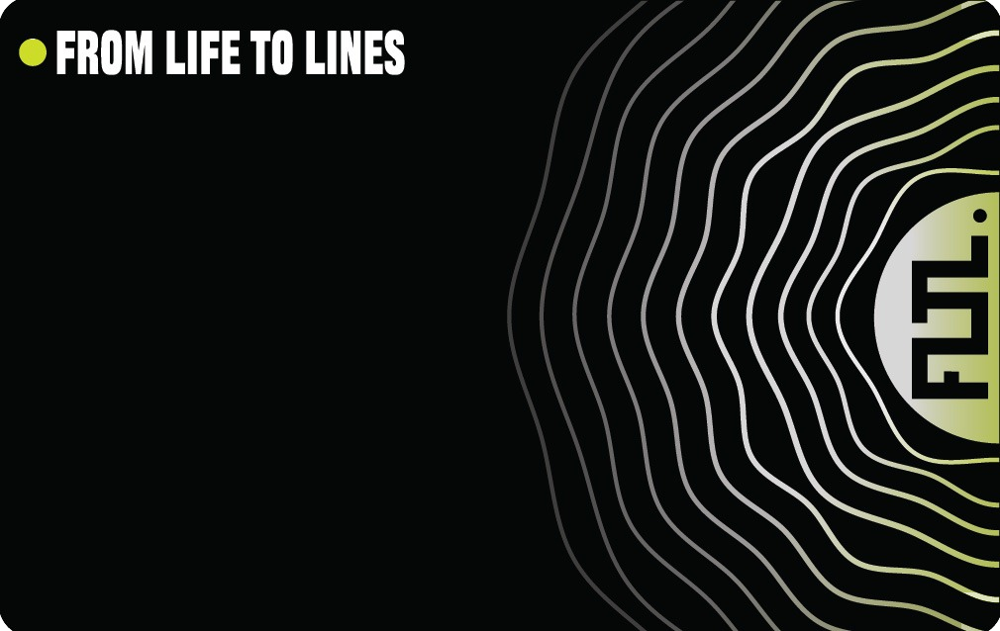

// WORK AS THE MAIN CHARACTER
精選專案目錄 // SELECTED WORK
實體產品、概念研究與數位體驗：以視覺為核心，展現設計力、產品思維與跨媒介落地能力。
FEATURED PRODUCT // 01
[SELF-INITIATED PRODUCT]

DISCIPLINES: BRAND / PRODUCT / PACKAGING / DIGITAL
YEAR: 2026
FLTL NFC 智慧商務名片系統 (Smart Hardware & Ecosystem)
Role: Brand, Product & Experience Design沉黑霧面防刮 NFC 實體卡，整合 AI 視覺 OCR 辨識、雙向通訊錄即時同步、行銷成效追蹤與企業 CRM 串接的軟硬整合人脈系統。以實體硬體為觸點，建立無紙化商務增長引擎。
// SELECTED CONCEPT STUDIES 概念研究專案
3 SELECTED CASES

[CONCEPT PROJECT]
2026
VISUAL SIMULATION
02. AURA 空間聲學耳機系統 (Spatial Audio)
視覺設計 / 藝術指導微工業機能美學：將耳機內部精密聲學濾波器與微晶片轉化為品牌核心視覺資產，探索硬體內部視覺化、3D 爆炸圖與天地蓋實體包裝概念。

[CONCEPT PROJECT]
2026
PACKAGING CONCEPT

[CONCEPT PROJECT]
2026
UI SIMULATION
04. NEXUS AI 模組化協作平台與動態介面
產品 UI/UX 設計全景曲面螢幕三欄式工作台，探索高密度資料視覺化、節點流程邏輯與深色開發者介面系統。
// SUPPORTING WORKS 設計與行銷實作
2 WORKS